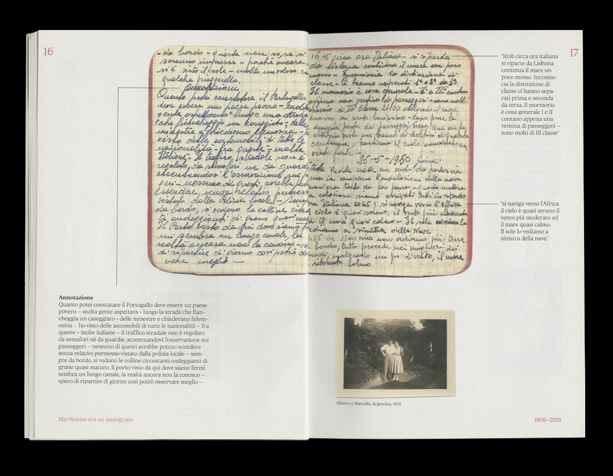

Alessandro Lucarini is an italiano vero. He has a Bachelor's degree in
Theatre Scenography (2018) at ABA Urbino. Currently he's studying
Graphic Design at KABK in The Hague, Netherlands. He's expressing his
interests through the production of
publications,
videos and
posters.
A small publication about the paradox of tolerance and nostalgic
fascism in Italy.
subdirectory_arrow_right Fino a che punto una società tollerante può tollerare una non
tollerante?
(2022), 100x210 mm
A family photo album about digital amnesia and blurred memories of a
pre-social network era. Based on my facebook data, mine and my
parents memories.
subdirectory_arrow_right What's behind the hills? (2022), designed by HEMA, 210x210
mm
A publication made in the form of a personal diary about low
self-esteem and the fear of being blocked. The diary shows different
projects that were started and never finished.
subdirectory_arrow_right Prelude to a failure (2021), 130x200 mm
An archive about color analises and the deconstruction of pictures
on my phone gallery. Color Archive is inspired by the studies
of Emily Noyes Vanderpoel. Thanks to Liza Daly and Mel Dollison for
the creation and free accesibility of
colorproblems.art
subdirectory_arrow_right Color Archive (2021), 195x280 mm
A short assignment during Design class in 2020, hosted by Susana
Carvalho, about two or three things that I want to learn/improve of
myself and going against the italian saying
chi nasce tondo non muore quadrato (whoever is borned round
doesn't die square).
subdirectory_arrow_right 2 or 3 things (2020)
A double-side publication about the comparison between Italian
immigration during the 1950s and the racism of Italians against
immigrants in the last decade. in 1950 side I used my
grandfather's original diary that he wrote while emigrating to
Argentina. In 2019 side I used articles and facts about
racism from the italian news.

subdirectory_arrow_right 1950-2019 (2019), 175x250 mm
Visual research into letter shape.
subdirectory_arrow_right Alphabet (2019), 150x210 mm
subdirectory_arrow_right The strangest day in the world (2022)
subdirectory_arrow_right 10 Netherlandish Proverbs in Den Haag (2021)
subdirectory_arrow_right My sweet quarantine-Expectations Vs Reality (2020)
.png)
.png)
.png)
.png)
.png)


.png)
.png)
.png)
.png)
.png)
.png)